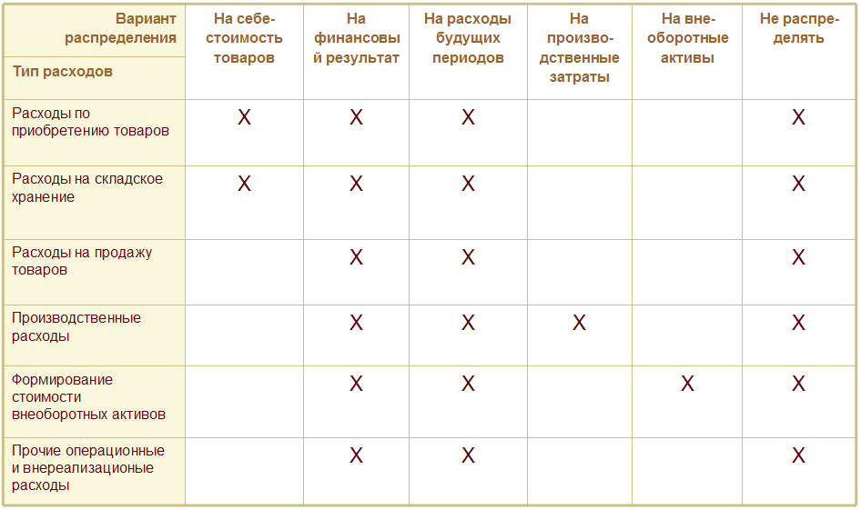

Статьи расходов указываются при регистрации всех расходов предприятия, кроме расходов на закупку товаров и работ. Статьи расходов являются классификатором, в разрезе которого можно проанализировать источники возникновения расходов.
Для учета расходов по статье в финансовом результате деятельности предприятия - они должны быть распределены согласно заданному варианту распределения.
Определение деятельности расходов
Выбор между вариантами распределения на себестоимость и на финансовый результат
Уточнение деталей по варианту распределения
Расходы, распределяемые на себестоимость товаров
Расходы, распределяемые на финансовый результат (направление деятельности)
Расходы, распределяемые на будущие периоды
Расходы, распределяемые на внеоборотные активы
Перенос расходов между организациями в управленческом учете
Регламентированный учет расходов
Классификация статей для целей налогового учета и отражения в бух. отчетности
Отражение в регл. учете по умолчанию
Ограничение использования статьи расходов
Тип расходов определяет целевую адресацию расходов, которая имеет следующие значения:
- Расходы на приобретение товаров
- Расходы на складское хранение и обработку
- Расходы на продажу товаров
- Производственные расходы
- Формирование стоимости внеоборотных активов
- Прочие операционные и внереализационные расходы.
Выбор типа расходов определяет доступные варианты распределения расходов в регламентированном и управленческом учете, а так же доступные типы аналитики.

Расходы могут относиться к основной или прочей деятельности предприятия. Для расходов по прочей деятельности предприятия доступен выбор только вариантов распределения На направление деятельности или Не распределять.
Выбранное значение определяет доступность счетов регл. учета для выбора.
Если расходы относятся к основной деятельности, то доступны для выбора счета 20, 23, 44....
При отнесении расходов к прочей деятельности, для выбора доступен счет 91
Для расходов по основной и прочей деятельности, в разрезе различных организаций могут быть выбраны как счета учета по основной деятельности, так и по прочей.
Для обеспечения соответствия данных управленческого учета принципам бухгалтерского учета - вариант распределения на себестоимость товаров рекомендуется использовать только для расходов, классифицируемых в бухгалтерском учете как Транспортно-заготовительные расходы. Согласно данному принципу - затраты на доставку товара от поставщика следует распределять на себестоимость товаров, затраты на доставку товаров до клиента следует распределять напрямую на финансовый результат.
Расходы по данной статье распределяются на себестоимость по указанной аналитике расходов и согласно заданному правилу распределения: пропорционально количеству, сумме, объему или весу.
| Пример. Предприятие заплатило за доставку товаров, закупленных у поставщика. Необходимо распределить стоимость услуг по доставке на себестоимость закупленной продукции, причем транспортная компания взимала плату пропорционально объему перевозимых товаров. Поступление услуг по доставке регистрируется по статье расходов с вариантом распределения на себестоимость товаров, аналитика расходов по статье - Приобретение товаров и услуг. Т.к. объемы упаковки товаров примерно одинаковые, то правило для распределения расходов на себестоимость - пропорционально количеству. |
Распределение расходов по аналитикам Склад и Номенклатура производится по данным об остатках на начало месяца и поступлении за месяц, без учета перемещений товаров между складами.
Если значение аналитики расходов не указано - распределение будет идти на все товары с соответствующей аналитикой:
Распределение расходов на себестоимость производится при выполнении операции Распределение затрат и расчет себестоимости в рабочем месте Закрытие месяца.
Аналитика расходов для статьи, распределяемой на финансовый результат, используется для целей последующей детализации расходов при их анализе. Например, аналитику расходов можно увидеть в отчете Расходы. Одним из вариантов аналитики расходов являются значения справочника Прочие расходы. Использование значений этого справочника в качестве аналитики позволяет проводить произвольную классификацию расходов, в соответствии с особенностями учетной политики конкретного предприятия.
Если включена опция Финансовый результат по направлениям деятельности в разделе НСИ и администрирование - Финансовый результат и контроллинг - Финансовый результат, то для такой статьи расходов следует настроить распределение расходов между разными направлениями деятельности. Для распределения между направлениями деятельности указывается способ распределения, распределение производится документом Распределение доходов и расходов по направлениям деятельности. Если учет в разрезе направлений деятельности не ведется - отдельного распределения для такой расходов по такой статье не требуется, они учитываются в финансовом результате в момент регистрации.
Для статьи расходов с таким вариантом распределения указывается политика раздельного учета товаров по налогообложению НДС: НДС может быть отнесен на вид налогообложения документа, отразившего расход по данной статье, или может быть распределен между всеми видами налогообложения, пропорционально выручке, полученной по ним в течение периода. Распределение НДС пропорционально выручке производится документом Распределение НДС.
По умолчанию, в будущих периодах эти расходы будут отражаться по статье расходов, указанной в поле статья списания расходов. Для распределения расходов на будущие периоды в конце месяца следует отразить документ Распределение РБП, в котором можно уточнить статью списания расходов и указать её аналитику.
Аналитика расходов для статьи, распределяемой на расходы будущих периодов, используется только для целей последующей детализации расходов при их анализе, с аналитикой статьи списания расходов она не связана.
Информацию о расходах будущих периодов, зарегистрированных в текущем месяце, и не распределенных в предыдущих месяцах, можно получить в отчете Расходы будущих периодов.
Отключение контроля заполнения аналитики расходов для данного варианта распределения невозможно.
К таким расходам относятся расходы на строительство объектов основных средств, осуществление НИОКР, на приобретение объектов строительства / ОС / НМА, на отнесение стоимости материалов на стоимость ОС / НМА / НИОКР / Прочих активов
Расходы относятся на стоимость внеоборотных активов:
Для статей расходов с аналитикой ОС доступна настройка параметров раздельного учета НДС. Может быть выбран вариант отнесения НДС на вид деятельности документа закупки или вариант определения вида деятельности НДС в момент принятия к учету ОС.
Для статьи расходов с таким вариантом распределения указывается политика раздельного учета товаров по налогообложению НДС: НДС может быть отнесен на вид налогообложения документа, отразившего расход по данной статье, или может быть распределен между всеми видами налогообложения, пропорционально выручке, полученной по ним в течение периода. Распределение НДС пропорционально выручке производится документом Распределение НДС.
В документах при отражении расходов можно указать аналитику расходов, относящуюся к другой организации:
Такие расходы будут сторнированы у организации, указанной в документе, и зарегистрированы у организации, указанной в аналитике расходов, в части сумм в валюте управленческого учета.
Если расходы являются не принимаемыми к налоговому учету, следует снять флаг Принимается к налоговому учету, при этом Вид расходов по основной деятельности будет автоматически установлен в значение Не учитываемые в целях налогообложения.
В зависимости от принадлежности расходов к основной или прочей деятельности предприятия, требуется указать Вид расходов по основной деятельности или Вид расходов по прочей деятельности соответственно. Выбранное значение влияет на заполнение декларации, регистров налогового учета по налогу на прибыль, а также бухгалтерской отчетности организации.
Для производственных расходов определяется, какими с точки зрения отнесения к расходам текущего налогового периода они являются - прямыми или косвенными. Прямые расходы относятся к расходам текущего отчетного (налогового) периода по мере реализации продукции, работ, услуг, в стоимости которых они учтены. Косвенные расходы, осуществленные в налоговом периоде, в полном объеме относится к расходам текущего налогового периода (с учетом норм).
Если используется совмещение основной системы налогообложения с ЕНВД, то следует указать к деятельности с какой системой налогообложения относятся расходы. Для статей расходов с вариантом распределения На направление деятельности в случае, если расходы нельзя однозначно отнести к деятельности с определенной системой налогообложения может быть выбрано значение ОСНО и ЕНВД. Также расходы будут распределены по базе, определенной в учетной политике организации.
Для статьи расходов с вариантом распределения На расходы будущих периодов задается Вид актива, который определяет строку бухгалтерского баланса, в которой будет отражаться РБП.
Признак Признавать расходами при УСН определяет признаются ли расходы при использовании упрощенной системы налогообложения с объектом налогообложения Доходы минус расходы.
Счет учета по умолчанию используется при отражении документов в регламентированном учете, если не заданы индивидуальные настройки по организации и подразделению. Для статей с вариантами распределения расходов На направление деятельности и На производственные затраты (косвенных для целей определения расходов текущего налогового периода) может быть также указаны счета списания по умолчанию.
Для статьи расходов может быть задан список хозяйственных операций, при отражении которых возможно указание данной статьи. При отражении других хозяйственных операций данная статья расходов будет не видна.
| Пример. В статье расходов с вариантом распределения на себестоимость товаров указана хозяйственная операция Прочие расходы подотчетного лица. В документе Приобретение услуг и прочих активов выбрать данную статью расходов будет невозможно, т.к. он отражает другие хозяйственные операции. |